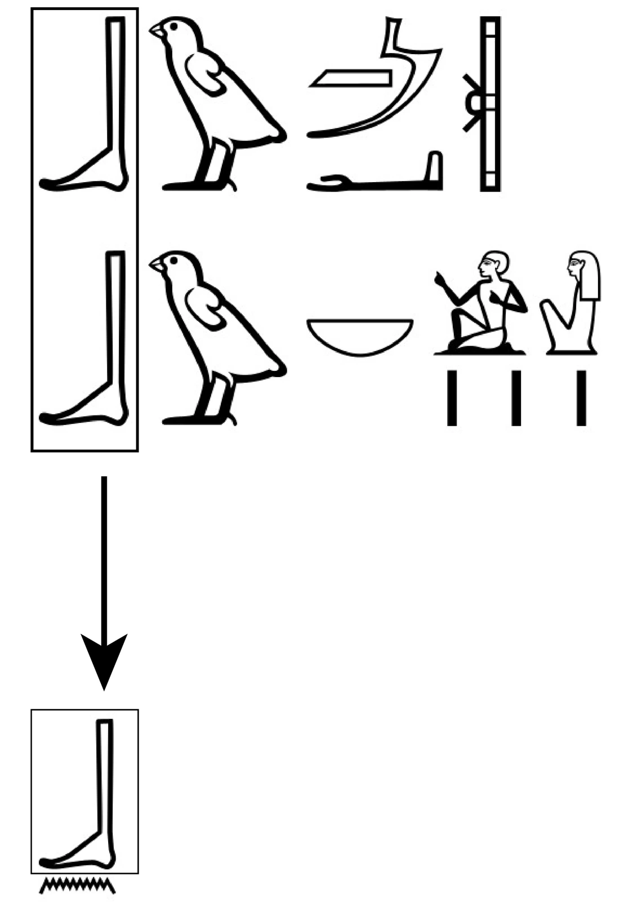

Abstract
In the mid-2nd millennium BCE, Egyptian scribes began writing a common negator as bn, with an odd foot sign of Gardiner D58 at its start. Building on past scholarship that recognizes the sign's semantic function and a larger, pre-existing orthographic link between negation and other body parts, this analysis identifies why disambiguation was needed in this specific case and why this specific sign was chosen as a disambiguator. On the one hand, the negator was at risk of confusion for other sentence-beginning entities potentially representable as a bare n. On the other hand, the not infrequent nominalizer bw that was also used to spell the word bw nb "everyone" began with a phonetically reduced b that had been retained in orthography, making it susceptible to reinterpretation as a semantic "beginning-of-unit" marker also applicable to negation. As two important steps in this argument, the nominalizer bw is shown to survive in the currently-misparsed section -ⲞⲨ- of Coptic adverbial phrases (e.g. Ϩ︦ⲚⲞⲨⲘⲈ "truly"), and bw nb "everyone" is identified as a non-etymological writing for wn nb "every being" (> Coptic ⲞⲨⲞⲚ ⲚⲒⲘ).
In the mid-2nd millennium BCE, Egyptian scribes began writing a common negator as bn, “[f]or reasons that are still unclear…” 1 The crux of the mystery is the odd foot sign of Gardiner D58 that is transliterated b. Aptly called “a semantic indicator of negation,” it has also been identified as participating in a larger, pre-existing orthographic link between negation and other body parts, namely the open arms sign of Gardiner D35 that begins the sequence transliterated as nn.2 However, this very plausible general influence does not explain why a semantic indicator of negation might have been needed with this specific negator, nor does it explain the specific choice of this foot sign of Gardiner D58 versus some other body part hieroglyph.
Perhaps a bit surprisingly for ancillary questions about the function of a single monoconsonantal hieroglyph, the path towards progress on both fronts primarily lies in underappreciated and unacknowledged evidence found in Coptic. Although Egyptian has chronologically deep attestation and is attested as a living language for more than four millennia,3 many developments and scholarly comparisons take place over textually-attested timespans similar to those of Romance linguistics. So, just like how bits of the Latin playwright Plautus unproblematically resonate with parts of present-day Spanish and French or just like how the pronunciation of today’s Romanian largely lines up with that of ancient diphthongs,4 so too it should be unsurprising if something on the earlier side of Coptic is substantially similar to and even clarificatory of the Egyptian of more than two thousand years prior. And indeed, this is the case here, for increased attention to Coptic negation helps reveal why an earlier semantic indicator of negation was needed, while the specific choice of the foot sign of Gardiner D58 is illuminated by locating Coptic counterparts to several common Egyptian words that begin with it.
Taken all together, this newly-afforded perspective reveals the existence of innovative orthographic reuse wherein the foot sign of Gardiner D58 was understood as a disambiguating “beginning-of-unit” marker before a hieroglyph marking the actual sound itself, having developed through reinterpretation of the quietly deceptive b that begins the “place”-derived nominalizer transliterated bw.
As it turns out, even the most straightforward of monoconsonantal hieroglyphs in very short and simple words may not always be what they seem.
1. A Need to Disambiguate Sentence-Beginning Entities Potentially Representable as a Bare n
Why might have Egyptian scribes needed a semantic indicator of negation?
Perhaps a bit surprisingly, scholarship on the development of negation in Egyptian is noticeably unsettled in a number of regards. That said, one clear albeit recently-identified trend is how negative existentials sometimes began moving into the domain of standard negation, in line with the cross-linguistic pattern termed the Negative Existential Cycle;5 a good example of this would be how the copula that comes down into Coptic as ⲠⲈ also appears in the negative perfect Ⲙ︦ⲠⲈ- and within the negative imperative Ⲙ︦Ⲡ︦Ⲣ-/Ⲙ︦ⲠⲰⲢ-. Another trend is the emergence of a discontinuous negative particle transliterated as iwnꜣ and that came down into Coptic as
(Ⲛ︦) …ⲀⲚ, in line with a different cross-linguistic phenomenon termed Jespersen’s Cycle.6 Between the broad outlines of these very prominent developments, there also existed the quieter, continuing phenomenon of some standard negation that in the mid-2nd millennium BCE began being written as bn, “[f]or reasons that are still unclear…”7
Here, a crucial clue lies in the diachronic continuity drawn between the negator transliterated as bn and the Coptic negator Ⲛ︦ that appears in the Ⲛ︦ …ⲀⲚ constructions with discontinuous negation.8 If the foot sign of Gardiner D58 does not actually represent a phonetic b, the remaining phonetic part of the word is the bare n that corresponds to the Coptic negator Ⲛ︦. Presumably, then, even if it was not fully equivalent to the later Coptic form, the earlier negator was also some sort of dental nasal at its core. In other words, apart from anything like a reduced vowel that would be consistent with its later representation under Coptic script, the most phonetically distinctive and the most orthographically representable portion of the negator would have been a single dental nasal.
Furthermore, this earlier negator was presumably also some sort of noticeably different manifestation of what had immediately preceded it. Some current scholarship sees this negator bn as the development of what is transliterated as nn, itself identified as a negative existential combining an older negator transliterated n or ny with a verb from the root transliterated wn “be, exist.”9 To work with this current theory, some phonetic reduction might have led the larger negative existential-derived sequence to collapse into what was at its core a single dental nasal n, somehow separate in pronunciation from the older negator transliterated n or ny and thus demanding a different representation. Alternately, some past scholarship has raised the possibility that the open arms sign of Gardiner D35 typically transliterated as n actually constituted at its core a bilabial nasal that should be transliterated as m,10 a somewhat plausible idea due to the negator’s place of articulation in fascinatingly archaic Coptic forms like ⲘⲈϢⲀⲔ “perhaps” (< n rḫ-k “you do not know”).11 If this other theory is true, the change might then have been a simple reanalysis of the old standard negator’s core that is transliterated as n (actually m) from a bilabial place of articulation to a dental one, amidst some degree of continuing allophonic place assimilation. In either case – and other evolutions could perhaps be posited – the Egyptian negator in question would have emerged at its core as a simple dental nasal, in noticeable contrast to whatever went before.
In such circumstances, scribes would have felt increased pressure to represent the negator as some form of the water-wave sign of Gardiner N35.
Because of its established use in other, more-historic forms of negation transliterated as n or ny and nn – including in the last case with the very water-wave of Gardiner N35 – the open arms sign of Gardiner D35 would have risked too much confusion as a determinative. For example, if that path had been taken, imagine the increase in negation mix-ups that would have occurred when scribes toggled back and forth between historic texts and present usage in their reading, writing, and copying.12
The water-wave sign of Gardiner N35 already looked a lot like the open arms sign of Gardiner D35 in hieratic,13 so it would have been especially hazardous to create a distinction in negation that rested on whether this very similar sign preceded or followed the determinative. This potential for graphic confusion would have been compounded to the degree that texts used historic negation in an outdated or somewhat artificial style, since in those cases scribes could not rely on their grammatical sense as native speakers in order to render quick judgments on the appropriate form. Thus, scribes would have been wise to opt away from the risks associated with again making use of the open arms sign of Gardiner D35 as a determinative, as part of their larger goal of ensuring faithfulness in textual transmission.
Yet, writing a bare n would have have risked confusion with other words and even morphemes that a bare n could represent, especially at the beginning of a sentence – for instance, the prefix n of an N-stem verb in a verb-initial sentence, or the causal conjunction n “because” derived from the benefactive-cum-purpose-cum-causal preposition that had been elevated from commanding a noun phrase to commanding an entire clause.14 As native speakers, scribes could of course “fill in the gaps” with Egyptian writing to a much greater degree than we can. But, because of the range of plausible forms that it could represent, a sentence-initial bare n would have frequently been hyperambiguous, admitting no obvious, definitive interpretation amidst a startlingly different array of meanings. So, scribes also would have been wise to avoid rendering the negator as a bare n, in order to forestall much unnecessary confusion.
Thus, when confronted by this newly-emerged negator that had somehow become palpably representable as a bare n, scribes would have felt a very acute need to find some way to decisively and unmistakably differentiate it in writing from those other entities with which it could be confused.
2. A Phonetically Reduced b that was Retained in the
Orthography bw
In these larger circumstances where Egyptian scribes would have sought a distinctive way of singling out a newly-emerged negator potentially representable as a bare n, they would have found ample material in the foot sign of Gardiner D58. As has been wisely emphasized in previous scholarship, this body part of the foot was of course resonant with the previously-existing negation-signaling body part of the open arms of
Gardiner D35.15
As has not been appreciated in previous scholarship, however, this very sign was also easily reinterpreted as a semantic “beginning-of-unit marker” thanks to how it functioned in the nominalizer transliterated bw and the common word bw nb “everybody,” a very subtle matter that only becomes clear with consultation of these words’ unrecognized Coptic descendants.
For, despite the apparent straightforward simplicity of the sequence transliterated bw, the bilabial obstruent represented by the initial b had ceased at some point to be there at all. Instead, due to the phonetic reduction that often occurs during grammaticalization, it had lenited to a bilabial glide indicated by the following w hieroglyph of the bw sequence, leaving that initial b wide open for reinterpretation.
2.1. Unrecognized Continuity of the Nominalizer bw with the -ⲞⲨ- of Coptic Adverbial Phrases
The sequence bw deriving from “place” has been properly identified as a nominalizer like abstract noun morphology even in basic resources, a long-standing identification that also enjoys substantial cross-linguistic plausibility.16 Well-known examples include bw mꜣꜥ “truth,” and such nouns can figure into larger prepositional phrases, as would be expected for any nouns, abstract or not.17
However, scholars do not seem to be aware that this morpheme from earlier in Egyptian has left its mark in Coptic adverbial phrases with “in” like Ϩ︦ⲚⲞⲨⲘⲈ “truly” (< “in truth”). In these adverbial phrases, the sequence -ⲞⲨ- has often been understood as an indefinite article, in an interpretative tradition spanning more than one hundred and forty years.18 And indeed, the indefinite article that derives from wꜥ “one” does appear as ⲞⲨ in Coptic.19 Yet, an adverb-indicating structure like “in a true (thing)” (< ẖnw wꜥ mꜣꜥ) possesses no obvious cross-linguistic parallels,20 which suggests that the Coptic indefinite article could be a misleading lookalike and thus a subtle misparsing of this short and apparently unassuming -ⲞⲨ- section of phrases like Ϩ︦ⲚⲞⲨⲘⲈ. Indeed, instead of originating in a phrase like “in a true (thing)” (< ẖnw wꜥ mꜣꜥ), this sequence -ⲞⲨ- in fact appears to be that same “place”-derived nominalizer from the earlier stage of Egyptian, in an adverbial phrase translatable “truly” but deriving from “in truth” (< ẖnw bw mꜣꜥ).
To dwell on this particular lexeme found at the heart of the Coptic phrase Ϩ︦ⲚⲞⲨⲘⲈ “truly,” one can even find two clear historic examples from the 12th and 19th Dynasties that use a different preposition “in” but are already being translated adverbially:21
ḏd-n-[i] | m | bw | mꜣꜥ |
speak-PST-1SG | in | NMLZ | true |
“I had spoken truly (lit. in trueness)” (Berlin 7313, as currently translated in the Thesaurus Linguae Aegyptiae) | |||
šms-i | sw | m | bw | mꜣꜥ |
follow-1SG | 3MSG.ACC | in | NMLZ | true |
“I followed him truthfully” (Cairo CG 42155, as currently translated in the Thesaurus Linguae Aegyptiae) | ||||
Although a preliminary search across multiple resources did not turn up examples with the relevant “in” preposition deriving from ẖnw, these two examples found with this representative lexeme are clearly resonant, and they seem best understood as predecessors with the same structure and usage as the Coptic, albeit with a slightly different preposition than came to be used later.22
As cross-linguistic parallels to this general structure, one can also adduce highly similar adverbial phrases found in other languages and even acknowledged in basic pedagogical resources for them: for example, Italian’s con entusiasmo “enthusiastically” (< “with enthusiasm”) and con discrezione “discreetly” (< “with discretion”), which parallels have even been categorized with the same Coptic-like terminology of “adverbial phrases.”23
Evidence-wise, more-marginal forms that apparently complicate this line of thinking such as ϦⲈⲚⲞⲨⲘⲈⲐⲘⲎⲒ “truly” (< “in truth”)24 are better understood as analogical restructurings merging two nominalizers, perhaps due to eventual speaker confusion of the “place”-derived morpheme with the indefinite article. Historically, such an adverbial phrase displays morphology derived from mdt “speech, matter.”25 Accordingly, this marginal form actually reveals further use of nominalizers in such adverbial phrases, and it thus actually constitutes further proof for the derivation Ϩ︦ⲚⲞⲨⲘⲈ “in truth” (< ẖnw bw mꜣꜥ).
To take seriously this new etymology that links the nominalizer transliterated bw with the Coptic -ⲞⲨ-, then, there should also be posited lenition of the initial bilabial obstruent into a bilabial glide as grammaticalization-attendant “phonetic reduction” (or “erosion”),26 perhaps alongside some sort of merger of that bilabial with the following vowel. Here, it should be noted that this type of phonetic reduction is not a regular sound change affecting all members of a class (e.g. some sort of historic phenomenon like lenition of all bilabial obstruents in initial position). Instead, phonetic reduction is a common but not unfailing linguistic hallmark of many individual grammaticalizing forms, separate from any sort of more-widespread change that would affect even the words that birthed them. To take a famous and very instructive example from a well-known language, think of how the innovative English future construction “going to” that comes from the motion verb “go”27 is starting to be found as “gonna.” It permits statements like “I’m gonna learn Arabic” in the innovative future-indicating sense, but it does not permit statements like *“I’m gonna Egypt” for “I’m going to Egypt” in the more-original motion-indicating sense. Thus, lenition of a bilabial obstruent to a glide is admittedly a linguistically uncontroversial development, and one can certainly find similar variations in places like Egyptian phonology and historic sound changes that can manifest in dialect variation.28 But, that said, identification of this particular grammaticalization-attendant phonetic reduction in Egyptian’s morphology should not lead us to try to locate other words that pattern with it in some sort of larger synchronic or diachronic class. To do so would be to misunderstand the incredibly narrow nature of the phonetic reduction that can occur during grammaticalization.
Orthographically, earlier historic writings include bw and a lone foot sign of Gardiner D58 with or without the single stroke of Gardiner Z1.29 Since both types of writings are attested as far back as the Pyramid Texts30 and evidence before then can be sparse and inconsistent, unresolved issues include which writing is earlier and whether the more-original word had an original high back vowel or not. In either case, the writing bw at some point must have been interpreted as a writing like the ri of bnri for bnr “be sweet” after loss of the final r in the manner of scattered exemplars also found as early as the Pyramid texts – in other words, the rightmost hieroglyph signals the present sound, whereas the hieroglyph to its immediate left is retained as orthographic detritus deriving from the more-original sound that is no longer present.31 In other words yet again, the signs functioned as something like bnri and bw, to use a strikethrough to represent the obsolete sound in transliteration.
2.2. An Unrecognized Non-Etymological Writing in bw nb for wn nb (> ⲞⲨⲞⲚ ⲚⲒⲘ)
Further evidence for this grammaticalization-attendant lenition can be seen in the standard non-etymological writing of bw nb for wn nb “everyone,” which should also be further identified as corresponding to the Coptic ⲞⲨⲞⲚ ⲚⲒⲘ “everyone” (< “every being”).
Here, the initial bit is not actually bw “place,” as one might assume from how basic language resources list bw nb as a common phrase involving that word.32 Instead, a very rare Eleventh Dynasty appearance of the phrase wn nb “everyone” (…in wn nb m s.t tn “…by everyone in this place”) and the Coptic ⲞⲨⲞⲚ most likely indicate that bw was a standard non-etymological writing that was used to write a deverbal noun from the root wn “be, exist” (i.e., “being”).33
The specific details of writing wn nb as bw nb are then understandable in two ways.
First, the sequence bw was able to represent a bilabial glide at the time of its introduction – that is, it was functioning as something like bw, to use a strikethrough to represent the obsolete sound in transliteration.
Second, in a common orthographic occurrence, it was not felt necessary to represent the closing nasal of wn because it was historically adjacent to another identical sound, as can be seen in the -Ⲛ Ⲛ- of its later descendant ⲞⲨⲞⲚ ⲚⲒⲘ.34
The act of non-etymological writing is also pretty intelligible because native speakers are not always aware of the etymological origins of every word that they use, especially with grammaticalizations and new rote phrasings. For example, this is probably why group (syllabic) writing was used for the newly-emerged Egyptian discontinuous negative particle transliterated iwnꜣ , although the reanalyzed minimizer ꜥ n “piece” that birthed it continued to exist alongside it in the language.35 Thus, a similar lack of historical insight into their “everyone” word wn nb would have made it very easy for scribes to produce and maintain a writing bw nb with a similar-sounding morpheme bw at its start, especially since bw was already associated so heavily with abstractions, generalities, larger contextualizations, and the like.
3. The Chronological Plausibility of Innovative Orthographic Reuse
In conjunction, the preceding observations form the basis of an intriguing, chronologically-plausible narrative, especially in light of helpful usage data assembled with that eminently laudable open access digital humanities tool of the Thesaurus Linguae Aegyptiae.
As a general background, a causal conjunction n “because” goes back at least as far as 2494 BCE,36 thus automatically setting up a problem with N-stems that would be even more exacerbated should there ever develop any other sentence-beginning word also representable as n.
In terms of what became the source for the later orthographic norm, some more-original, bilabial obstruent-incorporating version of the word “place” first existed as far back as 2686 BCE,37 although its exact contours remain a bit unclear, what with its similarly early writings like bw and the foot sign of Gardiner D58 with or without the single stroke of Gardiner Z1.
Next, due to the phonetic reduction that is often attendant upon grammaticalization, the voiced obstruent in the nominalizer bw lenited at some point and the overall sequence began functioning as something like bw (> -ⲞⲨ- ), to use a strikethrough to represent the obsolete sound in transliteration. This occurred by at least 2278 BCE, according to major attestations of the non-etymological writing bw nb “everyone” for wn nb (> ⲞⲨⲞⲚ ⲚⲒⲘ).38
Then, something apparently changed with the Egyptian negator, leaving it best representable with a bare n and thus creating a need for disambiguation. This occurred by at least 1539 BCE, according to major attestations of the bn solution.39
Pointedly, by this time generations of scribes would have already been regularly writing both bw (> -ⲞⲨ- ) and bw nb “everyone” (> ⲞⲨⲞⲚ ⲚⲒⲘ) for hundreds and hundreds of years. So, many scribes probably understood that initial b not as a historic sound-value resonant with the following w, but rather as a generic “beginning-of-unit” marker that appeared in a handful of common phrases. Then, some innovators would have realized that that generic “beginning-of-unit” marker could be more broadly used elsewhere like with a negator (fig. 1). That is, this apparently empty sign b was already appearing as the first sign in each of these common phrases, so why not co-opt it as the first sign for a newly-emerged, problematic negator? This especially would have been the case since the foot sign of Gardiner D58 would then constitute a body part signaling negation like the open arms sign of Gardiner D35.

Fig. 1. A lenited b reinterpreted as a semantic “beginning-of-unit” marker applicable to negation.
4. Some Further Evidentiary Reflections on the Case for Innovative Orthographic Reuse
The preceding case has hinged on a number of small reinterpretations of very short words, and to some it might raise the question of evidentiary preferability – that is, which sets of interpretations seem stronger, and on what grounds?40
Historically, the linguistic study of Egyptian has strongly overlapped with philology and the editing and translation of texts.41 So, the foremost form of argumentation has typically been the provision of relevant parallels, whether to illuminate meaning or even just to collect baseline data among which trends and nuances can be identified.42 This is a very valid method, and it has certainly been employed during the present analysis. For example, several parallels with a different preposition were adduced in order to argue for continuity between the adverbial phrases m bw mꜣꜥ “truly/truthfully” and Ϩ︦ⲚⲞⲨⲘⲈ “truly” (< ẖnw bw mꜣꜥ).
However, the provision of relevant parallels that demand explanation is not the only way to establish the preferability of one interpretation over another. Other methods include evaluation for cross-linguistic plausibility – that is, to what degree do developments in Egyptian resemble those found in other languages? – as well as evaluation for what might be called “internal coherence” – that is, to what degree do discernible patterns exist within and across the stages of Egyptian’s history, versus the postulation of phenomena that seem haphazard and fragmented?43 As with anything in scholarship, these other methods can be applied aptly or poorly, but their very existence cannot be denied. Egyptian was after all a human language, and Egyptian’s timeframe at least admits the possibility of a coherence more greatly resembling that found among Latin and the Romance languages, to think in concrete terms through another situation of linguistic evolution that also enjoys extensive historic documentation. In fact, to dwell on this latter point, although overviews of Egyptian often emphasize its great chronological depth and the long timespan of its attestation,44 it should not be forgotten that the twenty-two hundred or so years from the prime of Middle Egyptian to early Coptic neatly matches the length of time from the Latin playwright Plautus to any present-day Romance language. Furthermore, Egyptian appears to display more points of connection across such spans of time than has been previously appreciated – for example, the development of its discontinuous negative particle from a historically-attested minimizer, quite like the emergence of the French (ne) …pas from antecedents perceptible in Plautus.45
To turn to the present case for innovative orthographic reuse, then, the interpretations offered here seem preferable on all of these three fronts of evidence, to varying degrees.
Previous conceptualizations of the mentioned phenomena are surprisingly questionable when a larger range of comparanda are introduced. Effectively, previous conceptualizations posit two different diachronic replacements across Egyptian’s history. First, previous conceptualizations imply that the same root first figured into one kind of adverbial phrase and then into another, later, and purportedly unrelated kind of adverbial phrase – namely, m bw mꜣꜥ “truly/truthfully” as seen in the newly-adduced parallels, and then the purported indefinite article-incorporating construction seen in Ϩ︦ⲚⲞⲨⲘⲈ “truly” (< ẖnw wꜥ mꜣꜥ). Second, previous conceptualizations also imply that the word “everyone” also first took one major form and then another, later, and purportedly unrelated form – namely, bw nb “everyone,” and then the ⲞⲨⲞⲚ ⲚⲒⲘ “everyone” of Coptic. At times, this pointed fragmentation also seems to be matched by a lack of cross-linguistic parallels – for instance, the purported indefinite article-incorporating structure posited by the interpretation of Ϩ︦ⲚⲞⲨⲘⲈ “truly” as “in a true (thing)” (< ẖnw wꜥ mꜣꜥ), which interpretation does not seem to quite resemble anything found in other languages. Although they are manageable enough when engaged separately, all of these small points of interpretation when taken in tandem paint a picture of Egyptian that is oddly random and a bit out of synch with the rest of the languages of the world.
In comparison, the present analysis posits an Egyptian that is more internally coherent and that is more cross-linguistically typical. The same sort of adverbial phrase and the same word for “everyone” existed across broad swaths of Egyptian’s history, and the peculiar adverbial phrase structure previously posited for Coptic now looks a lot like things in other languages like Italian. To undergird these identifications, this present analysis does indeed provide two new explanations – namely, phonetic reduction of bw during the course of its grammaticalization as a nominalizer, and the non-etymological writing of wn nb as bw nb. But, the study of grammaticalization suggests that narrow word-particular phonetic reduction would have been a probable outcome of the use of bw as a nominalizer. Since scholarship already widely recognizes this use of bw as a nominalizer, it would be unjustifiable to refuse to acknowledge at least the possibility of phonetic reduction for the Egyptian; to take that stance would be an indefensible commitment to a queer kind of comparison-averse “particularism” that has affected Egyptology in other regards.46 Similarly, the phenomenon of non-etymological writing is a known feature of Egyptian under hieroglyphic scripts, and it seems uncontroversial to propose it here in a situation where the sounds and known orthographic tendencies allow for easy identification of a writing bw nb for wn nb, even apart from what may be a very rare and etymologically correct early writing of “everyone” as wn nb. Thus, on the whole, both these two diachronic identifications and the two means to achieve them seem relatively commonsense and unproblematic.
And then, once these very specific and very plausible identifications are made, much of the logic of the entire case for innovative orthographic reuse falls into place, whereby the odd foot sign of Gardiner D58 lay open for reinterpretation as “a semantic indicator of negation” on par with the open arms sign of Gardiner D35.
5. Summary and Conclusions
As it turns out, the very well-known and apparently straightforward signs found in the nominalizer bw and the common word bw nb “everyone” are anything but viscerally transparent. Their Coptic descendants -ⲞⲨ- and ⲞⲨⲞⲚ ⲚⲒⲘ help show that this b was actually lenited, where after grammaticalization-attendant phonetic reduction the writing bw could be interpreted as a historic spelling of b alongside a second sign of w that showed its current value. However, this also made the b susceptible to reinterpretation as a more-generic “beginning-of-unit” marker, and so it was seized on to help disambiguate a newly-emerged negator potentially written as bare n, especially due to the pre-existing semantic resonance of body parts with negation.
That said, this current case is not complete.
To more firmly link forms like bw mꜣꜥ “truth” and the adverbial phrase Ϩ︦ⲚⲞⲨⲘⲈ “truly,” highly desirable would be the location of at least one example under a hieroglyphic script of a nominalization with bw appearing with the relevant “in” preposition deriving from ẖnw and not just the “in” preposition transliterated m. Given the amount of surviving Egyptian texts, it is quite possible that at least one such example will be found in the future, but at the present moment it is really a gigantic desideratum.
Although not substantially affecting core argumentation, the more-original phonetic form of the word “place” and the more-original form of its writing deserve further thought, as does the side-issue of how the sequence transliterated nb could correspond to the Coptic ⲚⲒⲘ.47 For this latter line of inquiry, variant forms like ⲚⲒⲂⲈⲚ48 seem like a crucial clue to any eventual explanation, perhaps something along the lines of syllabic reduction of the final nasal that then merged with the preceding bilabial.49
To look out towards larger issues in negation, a major point worth reexamining is the consensus transliteration of the open arms sign of Gardiner D35 with a dental nasal n, in light of indications that it may have had a more-original value as a bilabial nasal m.50 Also not fully explained is the use of bw in sequences like the negative transliterated bw-pw that corresponds to the Coptic negative perfect Ⲙ︦ⲠⲈ-, a development that may have arisen roughly contemporaneously with the negator transliterated bn.51 The Coptic form strongly indicates some sort of negative existential cycle, wherein a subdomain of standard negation arises from negation of the copula that originally negated a following coordinated clause (< lit. “it is not [that]…”).52 So, if the b of bw-pw had a similar semantic “beginning-of-unit” function with negation like occured with the negator transliterated bn, the question then becomes why the sequence Ⲙ︦ of the Coptic would correspond to the w of the bw of bw-pw under earlier hieroglyphic scripts. Perhaps weak nasalization made the bilabial nasal resemble a glide; in either case, the sound’s realization as a nasal or a glide would have been perceptually less relevant because the following stop would have been voiced either way, if that earlier stage of Egyptian already displayed Coptic-like voicing patterns with obstruents.53 This aspect of the language and writing deserves much deeper thought than these initial speculations, however, especially considering its entanglement with the underscrutinized issue of various uses of asyndetic clausal coordination in Egyptian and their transformations over time.54
At the very least, though, despite all of these gaps and new questions, a basic case has now been made to more fully explain the odd use of the foot sign of Gardiner D58 as a semantic indicator of negation, however much this case could be further strengthened and whatever other vistas it should open up, if it be taken as probable and if it moves forward as a working hypothesis within scholarship more broadly.
Notes
For institutional support, thanks go to the Interlibrary Loan Department of the Urbana Free Library and to the University of Illinois at Urbana-Champaign, in particular its Courtesy Card Program, Circulation Department, and subject specialists Paula Carns and Elias Petrou.
Thanks also go to JSesh for the hieroglyphic font and to this article’s anonymous peer reviewers, whose feedback led to numerous clarifications and improvements.
-
Return to text ↩
Oréal 2022: 200.
-
Return to text ↩
Loprieno 1995: 140, a position followed by Werning 2019: 4. For a detailed but ultimately unsuccessful attempt to argue for a phonetic value in the b, see Osing 1980. Although it was not possible at the time, many of the important examples of Osing 1980 are best explained as various manifestations of the cross-linguistic phenomenon of the negative existential cycle, research into which began in the 1990s and overviews of which can be found in Willis, Lucas, Breitbarth 2013: 23-25 and Veselinova & Hamari 2022: 5‑12. For appropriate and productive recognition of the negative existential cycle in Egyptian, see Oréal 2022. Effectively, Osing 1980: 102-103 explains this diachronic development by reading the negative existential-derived negator back into history as the more-original form, albeit one that displays occasional reduced variants that explain the shorter negators that do not incorporate the existential. The even broader study of Davis 1973: 168-202 would also have benefitted from consistent recognition of the negative existential cycle, although that also was not possible at the time. Although neglected by these bodies of scholarship, the “give” word often transliterated rdi also possibly contains a similar non-phonetic semantic indicator, whenever spelled with the initial mouth sign of Gardiner D21; a wholly semantic sign transliterated r that never corresponded to a root consonant would especially explain its Coptic participle form ⲦⲀⲒ- “giver” (Crum 1939: 392, 395) vis-à-vis the C1VC2(C3) root-and-pattern morphology evident in other Coptic participles like ⲞⲨⲀⲘ- “eater” (478, 479) and ϨⲀⲦⲂ- “killer” (723).
-
Return to text ↩
Loprieno 1995: xi.
-
Return to text ↩
Alkire & Rosen 2010: 37, 144, 254, 303-304. Hansen 2013: 54-8.
-
Return to text ↩
Oréal 2022. Note also important related research into multi-verb constructions (e.g. Ross & Grossman 2019).
-
Return to text ↩
Mihalyfy, forthcoming.
-
Return to text ↩
Oréal 2022: 200.
-
Return to text ↩
Loprieno 1995: 89, 140, 180-182. Oréal 2022: 212.
-
Return to text ↩
Oréal 2022: 199-200. For the varying transliteration, see Loprieno 1995: 125.
-
Return to text ↩
Loprieno 1995: 125. Gesturing to such disagreements, Oréal 2022: 199n3 sensibly notes about her own study that “[t]he transliteration of Ancient Egyptian used here… represents written signs… and not the sounds of the language. In some cases, the phonemic reality is still a matter of discussion.”
-
Return to text ↩
Per the analysis of the negator as n at the end of Vycichl 1983: 128, although both Černý 1976: 96 and Vycichl 1983: 128 highlight the negator’s transliteration as bw in their primary etymology.
-
Return to text ↩
Pace Werning 2019, which acknowledges deviations in scribal renderings of such negation but emphasizes overall accuracy.
-
Return to text ↩
For contemporary pedagogical recognition of this similarity in some hieratic texts, see Möschen 2021: 204, which tellingly includes these signs in the very same subcategory within its broader search-list for similar forms (“Suchliste nach Ähnlichkeit”). See also Werning 2019: 5n19.
-
Return to text ↩
For a larger historic presence of N-stems than has been previously suspected, see Mihalyfy 2022-2023 and Mihalyfy 2024-2025. For the conjunction and the related preposition’s established uses, see Gardiner 1957: 126-127, §164, which range should be interpreted as a grammaticalization chain in light of Kuteva et al. 2019: 74-75, 350-351.
-
Return to text ↩
Loprieno 1995: 140. Werning 2019: 4.
-
Return to text ↩
Edel 1955: 111-112, §261. Gardiner 1957: 564. Faulkner 1962: 82. Hoch 1997: 223, §193. Allen 2014: 518. Thesaurus Linguae Aegyptiae 2026: Lemma ID 858690 (https://thesaurus-linguae-aegyptiae.de/lemma/858690), which recognizes under “Related lemmata” 616 instances of the noun and then 158 instances of nominalizations in concrete phrases, excluding the 103 instances of the disputable sequence bw nb. For a review of varying scholarly conceptualizations of this and other similar nominalizers, see Poiati Filho 2025: 42-83. This work also complicates easy understandings of “abstraction” (100-101, 261‑262), in addition to making some interesting reflections on nuances of particular lexicalizations (101‑149). For cross-linguistic perspective, see Kuteva et al. 2019: 334, which also serves as the source for the present analysis’s terminological choice of “nominalizer” (30), to replace relatively standard terms like “abstract noun morphology” that are now being disputed for the Egyptian.
-
Return to text ↩
Thesaurus Linguae Aegyptiae 2026: Lemma ID 55200 (https://thesaurus-linguae-aegyptiae.de/lemma/55200).
-
Return to text ↩
Stern 1880: 338, §514. Steindorff 1904: 76, §153. Steindorff 1951: 73, §140-141. Lambdin 1983: 88, §21.3. Buzi & Soldati 2021: 128, §105. Müller 2021: 529, §10.6.4. In comparison, note this morpheme’s absence in the etymological resources of Černý 1976: 208-209 and Vycichl 1983: 227-229, as well as the lack of any concrete identification of it in Layton 2007: 131, §119; Layton 2011: 174, §221; and Allen 2020b: 36, §5.4.
-
Return to text ↩
Černý 1976: 209. Vycichl 1983: 228.
-
Return to text ↩
For example, Kuteva et al. 2019: 483 lists “PLACE” and “THING” as sources for “NOMINALIZER,” but not “INDEFINITE.” Informal inquiries also failed to produce any cross-linguistic parallels.
-
Return to text ↩
Thesaurus Linguae Aegyptiae 2026: Lemma ID 55200 (https://thesaurus-linguae-aegyptiae.de/lemma/55200), which produces 16 sentences for consideration and leaves two clear examples after exclusion of relevant prepositional phrases that involve reconstructions and disputable signs in key areas: namely, Thesaurus Linguae Aegyptiae 2026: Sentence ID IBUBd8zi4AHOlkb0uSQ9gLt8n9I (https://thesaurus-linguae-aegyptiae.de/sentence/IBUBd8zi4AHOlkb0uSQ9gLt8n9I; Berlin 7313 - the stele of Mentuhotep, from the 12th Dynasty), Sentence ID ICIDGK3qpoRVdkAZouiMedH7EyI (https://thesaurus-linguae-aegyptiae.de/sentence/ICIDGK3qpoRVdkAZouiMedH7EyI; Cairo CG 42155 - Statue of Bakenkhons, from the time of Ramses II).
-
Return to text ↩
Černý 1976: 285 and Vycichl 1983: 303. Note also the tersely-stated and unreconciled variant etymologies of Westendorf 1965-1977: 375 and 377-378, which vacillate between ẖnw and a less-convincing origin in m-ẖnw. No clear examples emerged from consultation of all of the 158 nominalizations listed under the “Related lemmata” of Thesaurus Linguae Aegyptiae 2026: Lemma ID 858690 (https://thesaurus-linguae-aegyptiae.de/lemma/858690). Neither did any clear examples emerge through consultation of Erichsen 1954: 75-76, 113, 149-150, 381-382; Spiegelberg 1975: 31, §44-45, 142-144, §315‑319; or Chicago Demotic Dictionary 2001: 1-3 (entry W, in 7 August 2009 draft); 32-33 (entry B, in 23 August 2002 draft); 25-35 (entry M, in 13 July 2010 draft); and 30-35 (entry H̱, in 29 June 2001 draft). At best, the final example of Spiegelberg 1975: 31, §45 (repeated at 144, §319) deserves further scrutiny.
-
Return to text ↩
Stillman, Cherubini, Gordon 2019: 255.
-
Return to text ↩
For example, Crum 1939: 157, as noted by Buzi & Soldati 2021: 128, §105.
-
Return to text ↩
Černý 1976: 85. Vycichl 1983: 117. For the cross-linguistic plausibility of this standard etymology, see Kuteva et al. 2019: 433-434.
-
Return to text ↩
Kuteva et al. 2019: 3.
-
Return to text ↩
Kuteva et al. 2019: 214-217.
-
Return to text ↩
Peust 1999: 135. Allen 2020a: 21, 32, 47, 57, 72.
-
Return to text ↩
Gardiner 1957: 457. Thesaurus Linguae Aegyptiae 2026: Lemma ID 55110 (https://thesaurus-linguae-aegyptiae.de/lemma/55110).
-
Return to text ↩
Thesaurus Linguae Aegyptiae 2026: Sentence ID IBUBdwV4rza1l0oFlsYUimFEQ2s (https://thesaurus-linguae-aegyptiae.de/sentence/IBUBdwV4rza1l0oFlsYUimFEQ2s; PT 300, Unas), Sentence ID IBUBd0nzQ75CaEGftV0fjkdGH78 (https://thesaurus-linguae-aegyptiae.de/sentence/IBUBd0nzQ75CaEGftV0fjkdGH78; PT 57B-J/PT 71D, Neith).
-
Return to text ↩
Gardiner 1957: 29, §20. Loprieno 1995: 22. Hoch 1997: 11, §7. For example, see PT 368 wri “great one.” Although broaching much larger issues of sound change and orthography well beyond the scope of this paper, other possibilities with different hieroglyphs and underlying sounds include PT 222 hꜣw-k “you descend” and PT 247 sꜣi “wise one,” not to mention PT 357 ꜥꜣy “be great,” if -y is understand as a method of writing long vowels and diphthongs.
-
Return to text ↩
Gardiner 1957: 564. Faulkner 1962: 81. Allen 2014: 518. Thesaurus Linguae Aegyptiae 2026: Lemma ID 858690 (https://thesaurus-linguae-aegyptiae.de/lemma/858690).
-
Return to text ↩
Thesaurus Linguae Aegyptiae 2026: Sentence ID IBUBd0hK5V6gnUgWuOjqJDWpX5U (https://thesaurus-linguae-aegyptiae.de/sentence/IBUBd0hK5V6gnUgWuOjqJDWpX5U); Cairo CG 20543 - stele of Rediuikhnum, from the time of Antef II). This was the only example found by looking for co-occurrences of wn (Lemma ID 46050) and nb (Lemma ID 81660) (https://thesaurus-linguae-aegyptiae.de/search/collocation? formType=collocation_text&lemmaId1=46050&distance=1&lemmaId2=81660), although the Thesaurus Linguae Aegyptiae admittedly provides an understandable translation of “anyone” for this particular phrase in this particular text. Note that for bw nb itself, Thesaurus Linguae Aegyptiae 2026: Lemma ID 55210 (https://thesaurus-linguae-aegyptiae.de/lemma/55210) provides examples only from the Twelfth Dynasty onward, apart from a strange and somewhat impenetrable text from the time of Pepi II that may in fact be a misidentification of bw nb. Thus, the writing of wn nb in the Eleventh Dynasty could be a very early instance of the “everyone” word that became commonly rendered as bw nb from the Twelfth Dynasty onward.
-
Return to text ↩
Gardiner 1957: 52, §62.
-
Return to text ↩
Mihalyfy, forthcoming.
-
Return to text ↩
Thesaurus Linguae Aegyptiae 2026: Lemma ID 78880 (https://thesaurus-linguae-aegyptiae.de/lemma/ 78880).
-
Return to text ↩
Thesaurus Linguae Aegyptiae 2026: Lemma ID 55110 (https://thesaurus-linguae-aegyptiae.de/lemma/ 55110). This timeframe holds despite further preliminary investigation into earlier precedents; Kahl 1994: 465-468 provides no examples from the Third Dynasty or earlier, while Schweitzer 2005: 248 includes similarly-dated Fourth Dynasty examples of both the “place” word in its original function and the nominalization bw nfr.
-
Return to text ↩
Thesaurus Linguae Aegyptiae 2026: Lemma ID 55210 (https://thesaurus-linguae-aegyptiae.de/lemma/ 55210).
-
Return to text ↩
Thesaurus Linguae Aegyptiae 2026: Lemma ID 55500 (https://thesaurus-linguae-aegyptiae.de/lemma/ 55500). Note that this is slightly prior to the earliest date of Thutmose III cited by Osing 1980: 93, 103, in a
-
Return to text ↩
For methodological reflections that cover much similar territory, see Mihalyfy, forthcoming.
-
Return to text ↩
Loprieno 1995: xi.
-
Return to text ↩
Love 2021: 340.
-
Return to text ↩
For the vocabulary of “greater internal coherence” and “more coherent,” see Kilani 2025: 121, 122, and 127, which article also makes use of related terms like “a simpler and more consistent framework” (121) and “greater internal consistency and simplicity” (122), versus previous analyses deemed “chaotic” (127).
-
Return to text ↩
For example, Loprieno 1995: xi, 5.
-
Return to text ↩
Mihalyfy, forthcoming.
-
Return to text ↩
On comparison-averse “particularism” within Egyptological historiography, see Cooney 2021: 33–34.
-
Return to text ↩
Černý 1976: 108. Vycichl 1983: 142.
-
Return to text ↩
Crum 1939: 225.
-
Return to text ↩
Vycichl 1983: 142, versus less-convincing attempts like Peust 1999: 167 to explain the variant form by means of an “obscure suffix -ⲈⲚ”.
-
Return to text ↩
Despite the contrasting position noted by Loprieno 1995: 125, a mainstream of transliteration value can be seen in Champollion 1836: 443-444, §289; Sethe 1899: 435, §994; and Gardiner 1957: 454, with the last indicating the analytic importance of Gunn 1924: 83-87. Any attempt to posit a negator with a more-original bilabial nasal at its core must be able to account for orthographic substitutions with the dental nasal like are listed in Gunn 1924: 83-92, as well as broach any possible identity with a negative imperative transliterated as m, as described by Gardiner 1957: 260, §340. If identity is posited with this last negator, a reflection on the difference in its orthographic representation should also be offered. Compelling evidence for positing a more-original bilabial nasal at its core exists in the previously-mentioned word ⲘⲈϢⲀⲔ “perhaps” due to its apparently very old suffix conjugation form that is perhaps even cognate with bits of East Cushitic, if the underdiscussed insights of Banti 2001: 6-21 are correct (note this important study’s omission in Stauder 2023 despite the inclusion there of an earlier, now-superseded one by Banti, as well as its brief citation but in other regards by Souag 2023: 306; in comparison, Yoshino 2014 recognizes Banti 2001 and builds upon its insights). Although not of great evidentiary value because of the high likelihood of place assimilation, some forms like the Coptic negative existential construction ⲘⲚ︦- also apparently contain that same negator with another very old form, in this case use of the existential transliterated wn for what is now the present tense per Oréal 2022: 214-215 vis-à-vis Černý 1976: 82 (see also Vycichl 1983: 113). In a diachronic possibility apparently not considered by previous scholarship, the imperfective predecessor of this Coptic form may have somehow been more standard before an innovative progressive tense from a locative construction displaced it to possessive constructions, subordinate clauses, and the auxiliary verb for the imperfect tense, as can be perceived in Loprieno 1995: 80, and Gardiner 1957: 82, §107, 152, §201 vis-a-vis Bybee, Perkins, Pagliuca 1994: 146-148, 295-296. Given our evolving understanding of Egyptian negation due to the ongoing recognition of the importance of the negative existential cycle, it seems clear that this question about whether the more-original negator had a bilabial nasal at its core should at least be reopened, whatever the eventual outcome of debate. Note a somewhat similar call by Werning 2019: 4n8 for the reassessment of some details of Egyptian negation.
-
Return to text ↩
Loprieno 1995: 225. Thesaurus Linguae Aegyptiae 2026: Lemma ID 600038 (https://thesaurus-linguae-aegyptiae.de/lemma/600038), the attestation timeframe for which also begins in 1539 BCE.
-
Return to text ↩
Willis, Lucas, Breitbarth 2013: 23-25. Veselinova & Hamari 2022: 5-12. Beyond the negative existentials from wn “be, exist” highlighted in Oréal 2022, Egyptian negative existentials also apparently included a second set evident in Coptic forms like the negative imperatives Ⲙ︦Ⲡ︦Ⲣ-/Ⲙ︦ⲠⲰⲢ- and the negative perfect Ⲙ︦ⲠⲈ-, which should be ultimately derived from the demonstrative-turned-copula transliterated pw (i.e., a grammaticalization chain beginning in the demonstrative-to-copula transformation discussed in Kuteva et al. 2019: 136-137 and narrowly recognized by Černý 1976: 124, Vycichl 1983: 157, and Loprieno 1995: 69, pace Černý 1976: 86, 87, Vycichl 1983: 118, and Loprieno 1995: 93, 221, which postulate different origins for the larger copula-incorporating negation). Coptic’s possession of two different sets of transformations of negative existentials seems noteworthy, as does the sometimes-strange subdomains in which they became established.
-
Return to text ↩
Mihalyfy 2012.
-
Return to text ↩
For example, the exciting research into multi-verb constructions seen in Ross & Grossman 2019.
References
- Alkire, T. & Rosen, C. 2010. Romance Languages: A Historical Introduction. Cambridge, Cambridge University Press.
- Allen, J.P. 2014. Middle Egyptian: An Introduction to the Language and Culture of Hieroglyphs, 3rd ed. Cambridge, Cambridge University Press.
- Allen, J.P. 2020a. Ancient Egyptian Phonology. Cambridge, Cambridge University Press.
- Allen, J.P. 2020b. Coptic: A Grammar of Its Six Major Dialects, Languages of the Ancient Near East: Didactica 1. University Park, Eisenbrauns.
- Banti, G. 2001 (2004). “New Perspectives on the Cushitic Verbal System,” Berkeley Linguistics Society 27: 1-48.
- Buzi, P. & Soldati, A. 2021. La lingua copta. Milan, Editore Ulrico Hoepli.
- Bybee, J., Perkins, R. & Pagliuca, W. 1994. The Evolution of Grammar: Tense, Aspect, and Modality in the Languages of the World. Chicago, University of Chicago Press.
- Černý, J. (ed.). 1976. Coptic Etymological Dictionary. Cambridge, Cambridge University Press.
- Champollion, J.-F. 1836. Grammaire Égyptienne… Paris, Typographie de Firmin Didot Frères.
- Chicago Demotic Dictionary. 2001. Preliminary online publication of completed letters, ed. by J.H. Johnson,
https://isac.uchicago.edu/research/publications/chicago-demotic-dictionary. Accessed 24 June 2026. - Cooney, K. 2021. The Good Kings: Absolute Power in Ancient Egypt and the Modern World. Washington, D.C., National Geographic.
- Crum, W.E. 1939. A Coptic Dictionary. Eugene, Wipf and Stock. 2005 reprint.
- Davis, V.L. 1973. Syntax of the Negative Particles bw and bn in Late Egyptian, Münchner Ägyptologische Studien 29. Munich, Deutscher Kunstverlag.
- Edel, E. 1955. Altägyptische Grammatik, vol. I. Analecta Orientalia 34. Rome, Pontificium Institutum Biblicum.
- Erichsen, W. 1954. Demotisches Glossar. Copenhagen, Ejnar Munksgaard.
- Faulkner, R.O. 1962. A Concise Dictionary of Middle Egyptian. Oxford, Griffith Institute. 1999 reprint.
- Gardiner, A. 1957. Egyptian Grammar: Being an Introduction to the Study of Hieroglyphs, 3rd ed. Oxford, Griffith Institute. 1979 reprint.
- Gunn, B. 1924. Studies in Egyptian Syntax. Paris, Librairie Orientaliste Paul Geuthner.
- Hansen, M.-B.M. 2013. “Negation in the history of French.” In: The History of Negation in the Languages of Europe and the Mediterranean, vol. 1 - Case Studies, ed. by D. Willis, C. Lucas & A. Breitbarth, 51-76. Oxford, Oxford University Press.
- Hoch, J.E. 1997. Middle Egyptian Grammar, SSEA Publication XV. Mississauga, Benben Publications.
- Kahl, J. 1994. Das System der ägyptischen Hieroglyphenschrift in der 0.-3. Dynastie, Göttinger Orientforschungen IV: Reihe Ägypten 29. Wiesbaden, Harrassowitz Verlag.
- Kilani, M. 2025. “Egyptian Verbal Classes: A Shift in Paradigm,” Lingua Aegyptia 33: 121-163.
- Kuteva, T., Heine, B., Hong, B., Long, H., Narrog, H., Rhee, S. (eds.). 2019. World Lexicon of Grammaticalization, 2nd ed. Cambridge, Cambridge University Press.
- Lambdin, T.O. 1983. Introduction to Sahidic Coptic. Macon, Mercer University Press. 2000 reprint.
- Layton, B. 2007. Coptic in Twenty Lessons: Introduction to Sahidic Coptic with Exercises & Vocabularies. Leuven, Peeters.
- Layton, B. 2011. A Coptic Grammar with Chrestomathy and Glossary, 3rd ed, Porta Linguarum Orientalium 20 (Neue Serie). Wiesbaden, Harrassowitz Verlag.
- Loprieno, A. 1995. Ancient Egyptian: A Linguistic Introduction. Cambridge, Cambridge University Press.
- Love, E.O.D. 2021. Script Switching in Roman Egypt: Case Studies in Script Conventions, Domains, Shift, and Obsolescence from Hieroglyphic, Hieratic, Demotic, and Old Coptic Manuscripts, Archiv für Papyrusforschung und verwandte Gebiete 46. Berlin, De Gruyter.
- Mihalyfy, D. 2012. “Re-examining Spelling and Pronunciation in Coptic: A Case for the Intervocalic and Post-Nasal Allophonic Voicing of Obstruents,” Le Muséon 125, no. 3-4: 267-306.
- Mihalyfy, D. 2022-2023. “Three Newly Identified N-Stem Verbs in the Debate Between a Man and His Soul,” Journal of the Society for the Study of Egyptian Antiquities 49: 117-124.
- Mihalyfy, D. 2024-2025. “Four Newly-Identified N + S-Stem Verbs in the Tale of the Eloquent Peasant and the London-Leiden Magical Papyrus,” Journal of the Society for the Study of Egyptian Antiquities 51: 59-70.
- Mihalyfy, D. Forthcoming. “The origin of the Later Egyptian discontinuous negative particle iwnA ~ in ~ AN as a reanalyzed lexical reinforcer ‘piece,’” Prague Egyptological Studies.
- Möschen, S. 2021. Hieratische Chrestomathie, vol. 1 - Altes und Mittleres Reich, Einführungen und Quellentexte zur Ägyptologie 15. Berlin, Lit Verlag.
- Müller, M. 2021. Grammatik des Bohairischen, Lingua Aegyptia Studia Monographica 24. Hamburg, Widmaier Verlag.
- Oréal, E. 2022. “The Negative Existential Cycle in Ancient Egyptian.” In: The Negative Existential Cycle, Research on Comparative Grammar 2, ed. by Lj. Veselinova & A. Hamari: 197-230. Berlin, Language Science Press,
http://langsci-press.org/catalog/book/307. Accessed 24 June 2026. - Osing, J. 1980. “Zur Lesung der neuägyptish-demotischen Negation bn,” Enchoria 10: 93-104.
- Peust, C. 1999. Egyptian Phonology: An Introduction to the Phonology of a Dead Language, Monographien zur Ägyptischen Sprache 2. Göttingen, Peust & Gutschmidt Verlag.
- Poiati Filho, E. 2025. L’abstraction et les noms composés en égyptien de l’Ancien Empire à la Deuxième Période intermédiaire. Université de Montpellier Paul-Valéry, Ph.D. dissertation.
- Ross, D. & Grossman, E. 27 April 2019. “On serial verbs and other multi-verb constructions in Coptic.” Presentation given at Linguistics Prague 2019.
- Schweitzer, S.D. 2005. Schrift und Sprache der 4. Dynastie, MENES: Studien zur Kultur und Sprache der ägyptischen Frühzeit und des Alten Reiches 3. Wiesbaden, Harrassowitz Verlag.
- Sethe, K. 1899. Das aegyptische Verbum im Altaegyptischen, Neuaegyptischen und Koptischen, vol. 2 - Formenlehre und Syntax der Verbalformen. Leipzig, J.C. Hinrichs’sche Buchhandlung.
- Souag, L. 2023. “Restructured or Archaic? The Hunt for Shared Morphological Innovation Involving Egyptian.” In: Ancient Egyptian and Afroasiatic: Rethinking the Origins, Languages of the Ancient Near East 11, ed. by M.V. Almansa-Villatoro & S. Štubňová Nigrelli: 303-318. University Park, Eisenbrauns.
- Spiegelberg, W. 1975. Demotische Grammatik, 2nd ed. Heidelberg, Carl Winter Universitätsverlag.
- Stauder, A. 2023. “Egyptian Morphology in Afroasiatic Perspective.” In: Ancient Egyptian and Afroasiatic: Rethinking the Origins, Languages of the Ancient Near East 11, ed. by M.V. Almansa-Villatoro & S. Štubňová Nigrelli: 53-136. University Park, Eisenbrauns.
- Steindorff, G. 1904. Koptische Grammatik mit Chrestomathie, Wörterverzeichnis und Literatur, Porta Linguarum Orientalium XIV. Berlin, Verlag von Reuther und Reichard.
- Steindorff, G. 1951. Lehrbuch der koptischen Grammatik. Chicago, University of Chicago Press.
- Stern, L. 1880. Koptische Grammatik. Leipzig, T.O. Weigel.
- Stillman, D.M., Cherubini, T. & Gordon, R.L. 2019. The Ultimate Italian Review and Practice, 2nd ed. New York, McGraw-Hill.
- Thesaurus Linguae Aegyptiae. 5 June 2026. Corpus edition 20, Web app version 2.5.1, ed. by T.S. Richter & D.A. Werning on behalf of the Berlin-Brandenburgische Akademie der Wissenschaften and H.-W. Fischer-Elfert & P. Dils on behalf of the Sächsische Akademie der Wissenschaften zu Leipzig,
https://thesaurus-linguae-aegyptiae.de. Accessed 24 June 2026. - Veselinova, Lj. & Hamari, A. 2022. “Introducing the Negative Existential Cycle.” In: The Negative Existential Cycle, Research on Comparative Grammar 2, ed. by Lj. Veselinova & A. Hamari: 1-56. Berlin, Language Science Press,
http://langsci-press.org/catalog/book/307. Accessed 24 June 2026. - Vycichl, W. 1983. Dictionnaire étymologique de la langue copte. Leuven, Peeters.
- Werning, D.A. 2019. “Sentence Negation in Égyptien de tradition: Spellings, phonological interpretation, and usage.” Unpublished paper,
https://edoc.hu-berlin.de/server/api/core/bitstreams/bcca81a9-02d7-4d53-baef-0a5384bb3ca5/content. Accessed 24 June 2026. - Westendorf, W. 1965-1977. Koptisches Handwörterbuch, in 9 fascicles. Heidelberg, Carl Winter Universitätsverlag.
- Willis, D., Lucas, C. & Breitbarth, A. 2013. “Comparing diachronies of negation.” In: The History of Negation in the Languages of Europe and the Mediterranean, vol. 1 - Case Studies, ed. by D. Willis, C. Lucas & A. Breitbarth, 1-50. Oxford, Oxford University Press.
- Yoshino, H. 2014. “Some linguistic evidence supporting the participle origin of the sḏm-f verb-form.” Revised version of a presentation at the 56th Annual Conference of the Society for Near Eastern Studies in Japan,
https://www.academia.edu/14589888 _Poster_Some_linguistic_evidence_supporting_the_participle_origin_of_the_sDm_f_verb_form. Accessed 24 June 2026.
Cite this article
Mihalyfy, D. 2026. Explaining the Odd Foot Sign of Gardiner D58 in the Egyptian Negator Transliterated bn: A Case for Innovative Orthographic Reuse Based on the Phonetic Reduction of the Nominalizer bw (> -ⲞⲨ-) and the Non-Etymological Writing bw nb for wn nb (> ⲞⲨⲞⲚ ⲚⲒⲘ). Bibliothèque ouverte d'égyptologie 2026/2. Montpellier : Bibliothèque ouverte des mondes anciens, 27 p. 10.5281/zenodo.20841508